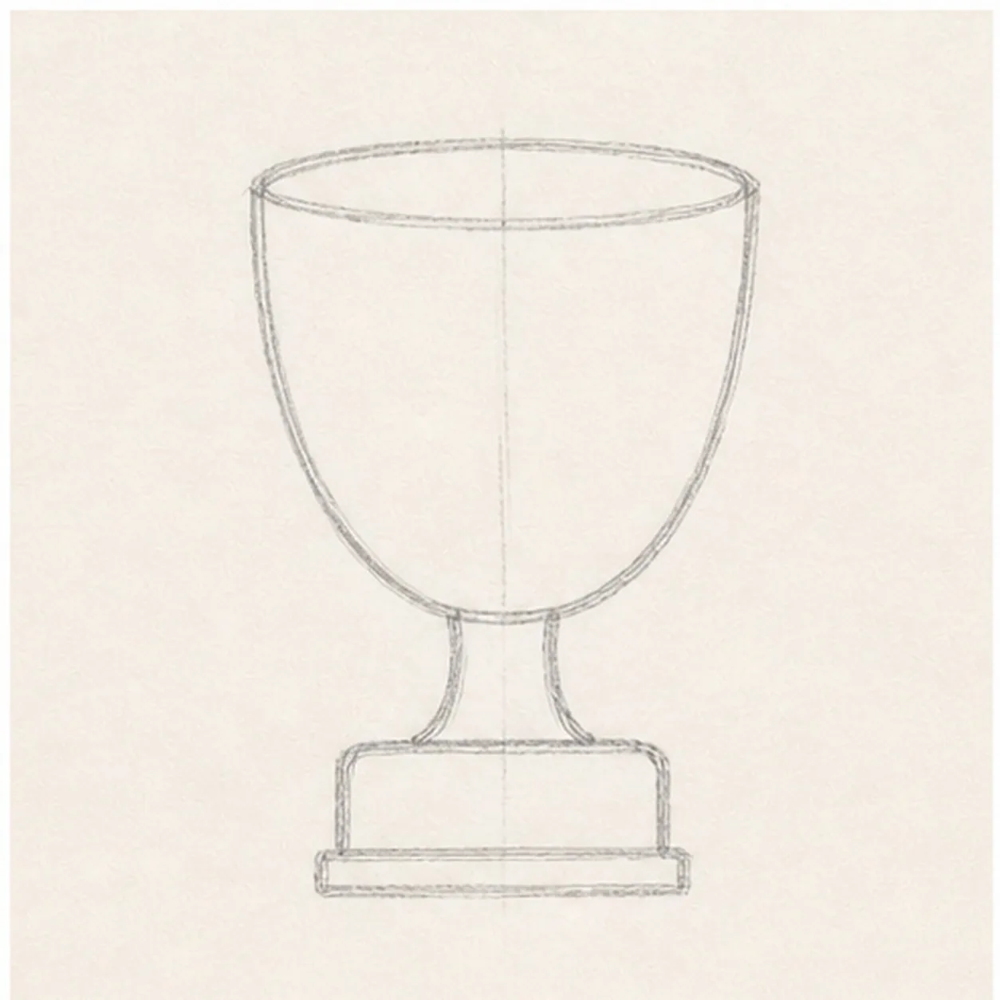
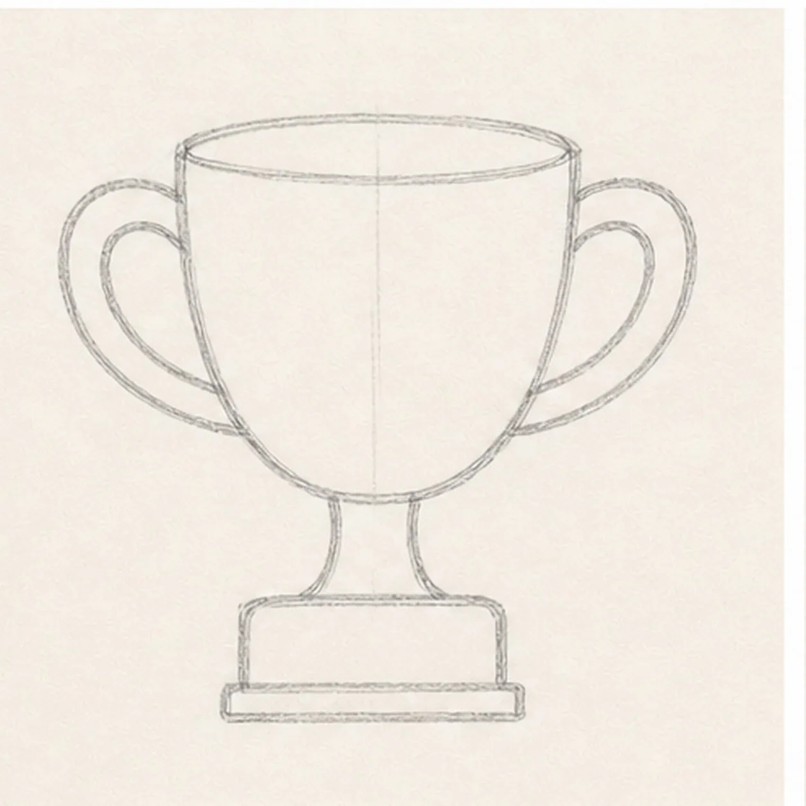
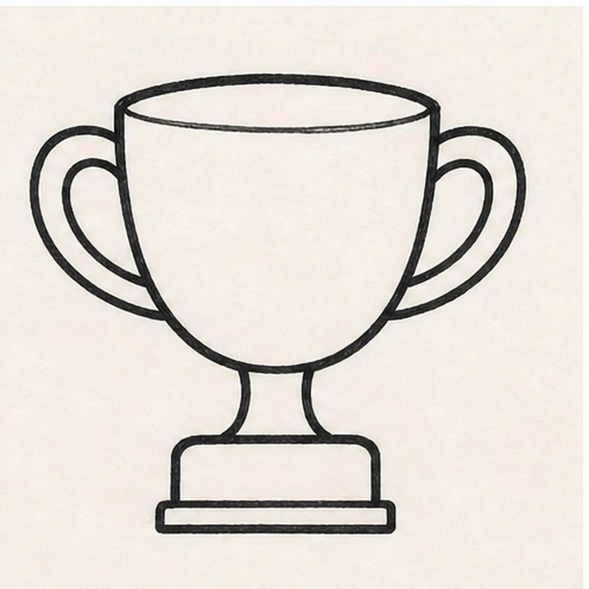
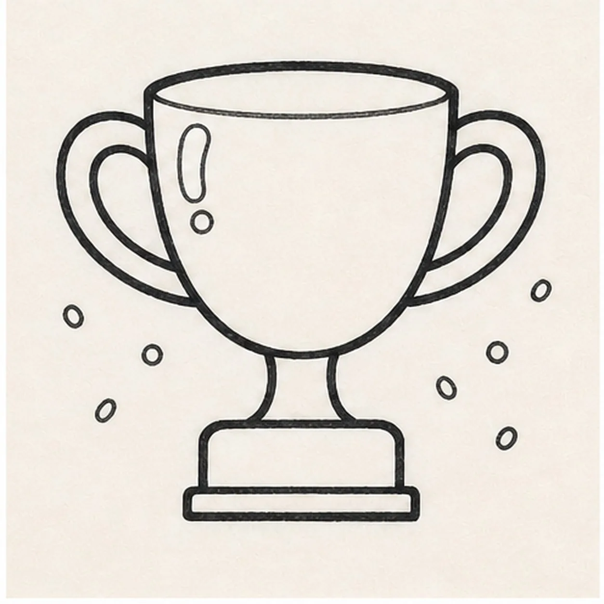
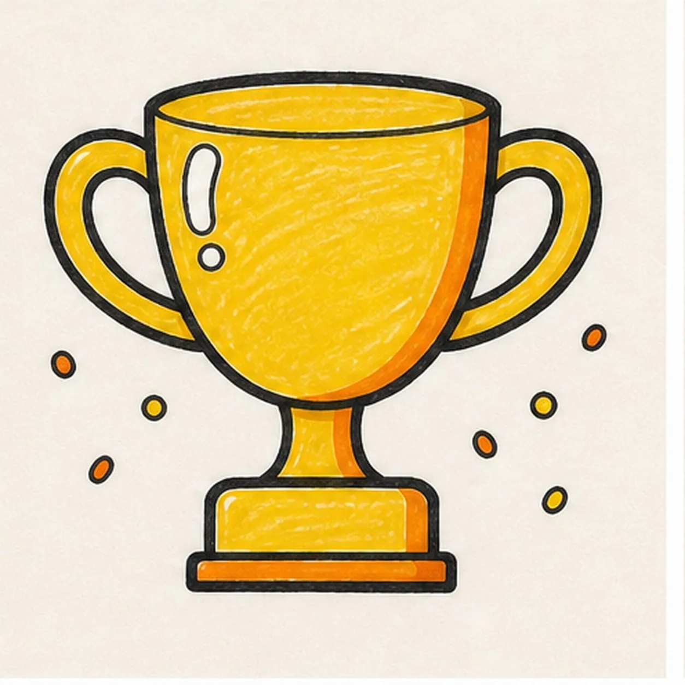

Felt-tip marker mode
Let's doodle a trophy cup
Treat this as one playful practice round: sketch the idea loosely, simplify the shapes, then commit with confident marker outlines and bright fills.
-
01

Block the trophy
Draw a wide oval rim, curve the cup sides inward, then add a short stem and rectangular base underneath.
Doodle tip: Keep the cup wider than the base. That top-heavy shape is what reads as a trophy.
-
02

Add the handles
Draw one loop handle on each side, attaching them near the rim and the lower cup.
Doodle tip: Make the handles almost mirror each other, but do not worry about perfect symmetry.
-
03

Thicken the trophy outline
Trace the rim, cup, handles, stem, and base with a bold black marker line.
Doodle tip: Use the thick outline to simplify any wobbly construction lines.
-
04

Add shine and confetti
Draw one white shine shape on the cup and scatter a few small confetti dots around the trophy.
Doodle tip: Keep the shine on one side so the cup still feels rounded.
-
05

Fill the gold marker
Color the trophy yellow, then add orange marker along one side and across the base for shadow.
Doodle tip: Leave a few marker streaks and the shine shape uncolored. That keeps the cup bright.
-
06
Polish the trophy shine
Tighten the cup, handle, and base outlines, deepen the gold and orange marker fills, and keep the shine shape clean.
Doodle tip: Leave the confetti count alone. The trophy should feel polished, not crowded.